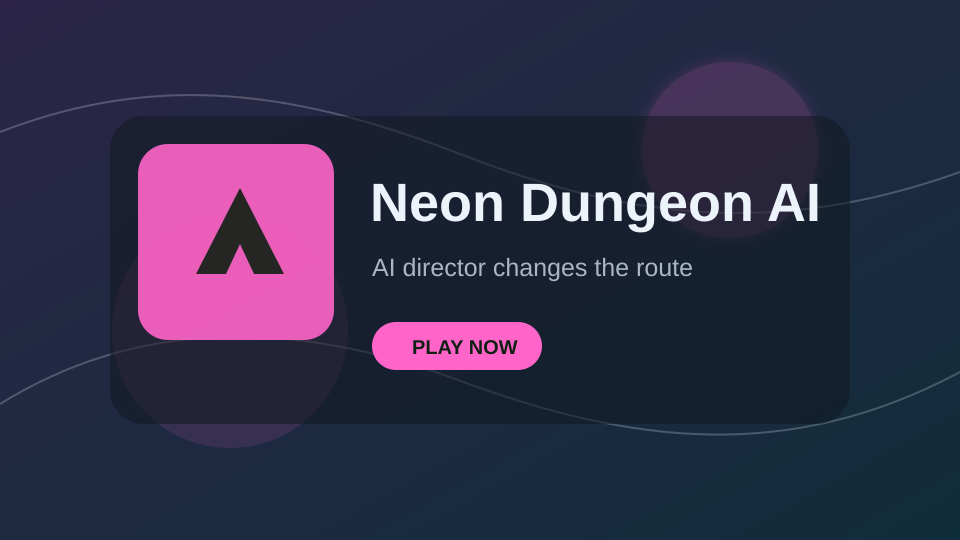

Godot 3.6 / Browser Playable Games
Webで遊べるゲーム作品一覧
Steamストア風の見やすさを意識した、静的なゲームポートフォリオです。 各カードから紹介ページとプレイページへ移動できます。
スマホで遊ぶ方へ: 一部タイトルは端末負荷でブラウザが落ちる場合があります。軽量版への導線は スマホ向けページ を利用してください。
Library
Godot 3.6 / Browser Playable Games
Steamストア風の見やすさを意識した、静的なゲームポートフォリオです。 各カードから紹介ページとプレイページへ移動できます。
スマホで遊ぶ方へ: 一部タイトルは端末負荷でブラウザが落ちる場合があります。軽量版への導線は スマホ向けページ を利用してください。

Library